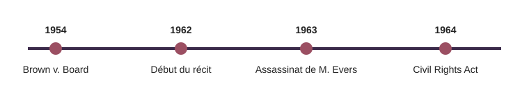

Contexte
Le roman et le film
L’histoire se déroule à Jackson, dans le Mississippi, entre 1962 et 1964. Elle suit des employées domestiques noires au service de familles blanches, et une jeune femme blanche, Skeeter, qui décide de recueillir leurs témoignages.
- Roman : Kathryn Stockett, 2009.
- Film : Tate Taylor, 2011, avec Viola Davis, Octavia Spencer et Emma Stone.
Cadre historique

Le récit s’inscrit dans la période des luttes pour les droits civiques et de la ségrégation légale (lois Jim Crow). Medgar Evers, militant de la NAACP, est assassiné à Jackson en 1963, un événement qui apparaît dans l’histoire.
Le travail domestique dans le Sud
Une grande partie des femmes noires du Sud occupaient des emplois domestiques, mal payés et peu protégés : un enjeu central du roman.